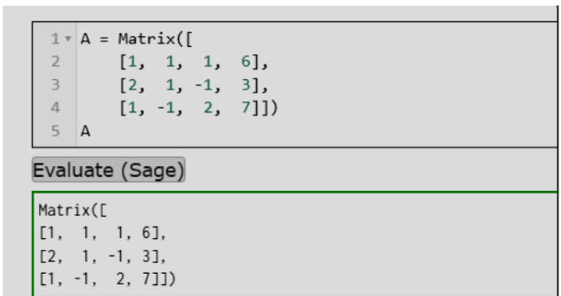
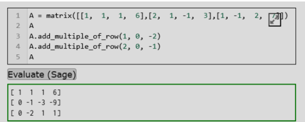
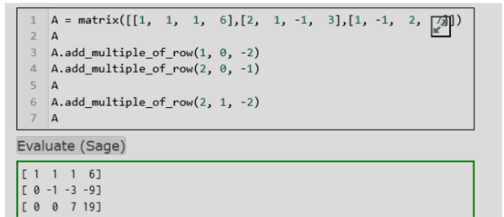
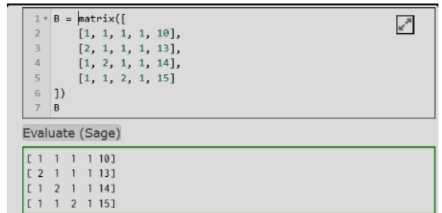
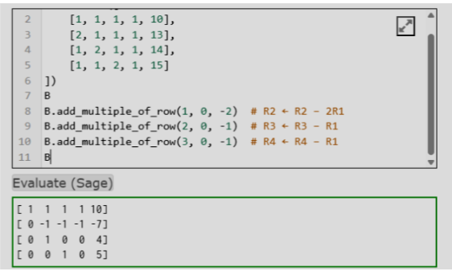
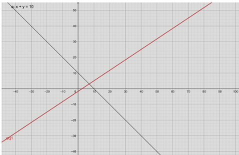
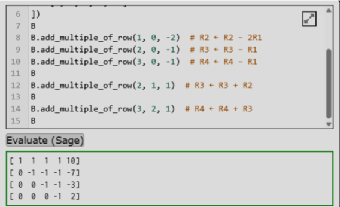

SISTEM PERSAMAAN LINEAR MATRIK#
Nama : SHOFWANI
NIM : 250411100090
Kelas : 2A
Mata Kuliah : KOMPUTASI ALJABAR LINIER
Membuat contoh penyelesaian sistem persamaan linier tiga variabel dan empat variabel dengan menggunakan metode Eliminasi Gaussian. Proses pencarian solusi dapat dilakukan menggunakan tools yang telah diperkenalkan sebelumnya, kemudian hasilnya didokumentasikan dan disajikan dalam Jupyter Notebook.
Eliminasi Gaussian#
Penyelesaian Sistem Persamaan Linier 3 dan 4 Variabel#
(Menggunakan operasi baris elementer add_multiple_of_row)
A. Sistem Persamaan Linier Tiga Variabel#
1. Sistem Persamaan#
2. Matriks Augmented#

3. Eliminasi Gauss#
Langkah 1#
Menghilangkan elemen di bawah pivot pertama (kolom pertama).

Hasil#
Langkah 2#
Menghilangkan elemen di bawah pivot kedua.

Lanjutan Langkah OBE & Substitusi Balik#
Dari matriks segitiga atas yang diperoleh melalui proses Operasi Baris Elementer (OBE), kita dapat melakukan langkah substitusi balik (back-substitution) untuk menemukan nilai dari masing-masing variabel:
Proses Substitusi Balik:#
Dari baris ketiga, diperoleh nilai \(z\): $\(7z = 19 \longrightarrow z = \frac{19}{7}\)$
Substitusikan nilai \(z\) ke baris kedua untuk mencari \(y\): $\(-1y - 3z = -9\)\( \)\(-y - 3\left(\frac{19}{7}\right) = -9\)\( \)\(-y - \frac{57}{7} = -\frac{63}{7} \longrightarrow y = \frac{6}{7}\)$
Substitusikan nilai \(y\) dan \(z\) ke baris pertama untuk mencari \(x\): $\(x + y + z = 6\)\( \)\(x + \frac{6}{7} + \frac{19}{7} = 6\)\( \)\(x + \frac{25}{7} = \frac{42}{7} \longrightarrow x = \frac{17}{7}\)$
Solusi Akhir Matriks:#
B. Sistem Persamaan Linier Empat Variabel#
1. Sistem Persamaan#
Diberikan sistem persamaan linear dengan empat variabel \((x, y, z, w)\) sebagai berikut:
2. Matriks Augmented#
Sistem di atas dapat direpresentasikan ke dalam bentuk matriks augmented awal sebelum dilakukan operasi baris lanjutan:

3. Eliminasi Gauss#
Langkah 1#
Menghilangkan elemen pada kolom pertama:

Langkah 2#
Menghilangkan elemen pada kolom kedua:

$\( \text{Hasil: } \begin{bmatrix} 1 & 1 & 1 & 1 & \mid & 10 \\ 0 & -1 & -1 & -1 & \mid & -7 \\ 0 & 0 & -1 & -1 & \mid & -3 \\ 0 & 0 & 1 & 0 & \mid & 5 \end{bmatrix} \)$Langkah 3#
Menghilangkan elemen pada kolom ketiga:

$\( \text{Hasil: } \begin{bmatrix} 1 & 1 & 1 & 1 & \mid & 10 \\ 0 & -1 & -1 & -1 & \mid & -7 \\ 0 & 0 & -1 & -1 & \mid & -3 \\ 0 & 0 & 0 & -1 & \mid & 2 \end{bmatrix} \)$4. Substitusi Balik#
Berdasarkan hasil akhir dari matriks eselon baris (segitiga atas) yang telah diperoleh pada langkah sebelumnya, kita melakukan substitusi balik untuk mendapatkan nilai dari setiap variabel:
\(w = -2\)
\(z = 5\)
\(y = 4\)
\(x = 3\)